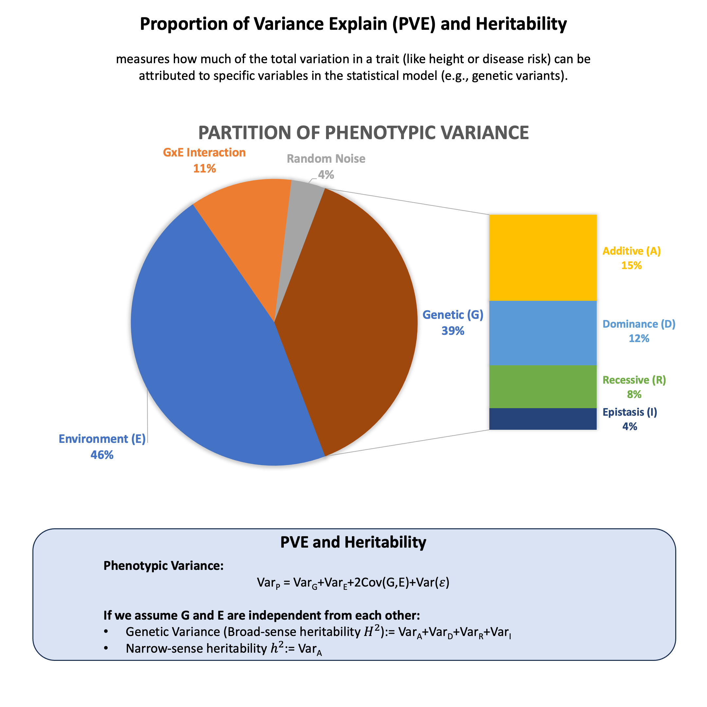

Proportion of Variance Explained and Heritability#
Proportion of variance explained (PVE) measures how much of the total variation in a trait (like height or disease risk) can be attributed to specific variables in your statistical model (e.g., genetic variants). Heritability is a specific application of this concept that measures how much of the variation in a trait across a population can be explained by genetic differences.
Graphical Summary#

Key Formula#
Any phenotype can be modeled as the sum of genetic and environmental effects, i.e., \(\text{Phenotype}~(Y) = \text{Genotype}~(G) + \text{Environment}~(E)\), and under the assumption that G and E are independent from each other, the proportion of variance explained (PVE) by genetic effect alone (also called broad-sense heritability \(H^2\)) can be derived as
where:
\(\text{Var}_G\) is the genetic variance component
\(\text{Var}_E\) is the environmental variance component
Technical Details#
Components of Variance#
Any phenotype can be modeled as the sum of genetic and environmental effects:
The phenotypic variance in the trait can then be partitioned as:
Where:
\(\text{Var}_G\) is the genetic variance component
\(\text{Var}_E\) is the environmental variance component
\(\text{Cov}(G,E)\) is the covariance between genetic and environmental effects
Broad-sense Heritability#
In controlled experimental settings, we can design studies where \(\text{Cov}(G,E)\) is minimized and effectively set to zero. In such cases, heritability is defined as the proportion of phenotypic variance attributable to all genetic effects:
This represents the proportion of phenotypic variance attributable to genetic variance.
Narrow-sense Heritability#
Narrow-sense heritability (\(h^2\)): The proportion attributable to only additive genetic effects:
Where \(\text{Var}_A\) is the additive genetic variance, a component of \(\text{Var}_G\).
Other components of \(\text{Var}_G\) includes \(\text{Var}_D\) (dominance variance) and \(\text{Var}_I\) (epistatic variance, i.e., gene-gene interaction)
Example#
When we say a trait has “50% heritability,” what does that actually mean? Let’s explore this using the same toy example with 5 individuals and see how much of their trait variation comes from genetics versus other factors. The key question is: How much of the differences we see in their trait values can be explained by their genetic differences?
We’ll calculate this step by step, first using a simple scenario where the genetic variant has the same effect size for everyone ,then move on to the case where each person has their own unique genetic effect. This will help us understand what “proportion of variance explained” really means in practice.
# Clear the environment
rm(list = ls())
set.seed(11)
# Define genotypes for 5 individuals at 3 variants
# These represent actual alleles at each position
# For example, Individual 1 has genotypes: CC, CT, AT
genotypes <- c(
"CC", "CT", "AT", # Individual 1
"TT", "TT", "AA", # Individual 2
"CT", "CT", "AA", # Individual 3
"CC", "TT", "AA", # Individual 4
"CC", "CC", "TT" # Individual 5
)
# Reshape into a matrix
N = 5
M = 3
geno_matrix <- matrix(genotypes, nrow = N, ncol = M, byrow = TRUE)
rownames(geno_matrix) <- paste("Individual", 1:N)
colnames(geno_matrix) <- paste("Variant", 1:M)
alt_alleles <- c("T", "C", "T")
# Convert to raw genotype matrix using the additive model
Xraw_additive <- matrix(0, nrow = N, ncol = M) # count number of non-reference alleles
rownames(Xraw_additive) <- rownames(geno_matrix)
colnames(Xraw_additive) <- colnames(geno_matrix)
for (i in 1:N) {
for (j in 1:M) {
alleles <- strsplit(geno_matrix[i,j], "")[[1]]
Xraw_additive[i,j] <- sum(alleles == alt_alleles[j])
}
}
X <- scale(Xraw_additive, center = TRUE, scale = TRUE)
Fixed Effect#
As we discussed before, in the fixed effect model, the genetic effect \(\beta\) is a constant parameter that applies uniformly to all individuals. We then calculate the PVE of the variants.
# Fixed effect: single beta value for all individuals
beta <- 0.8 # Fixed effect size
epsilon <- rnorm(N, mean = 0, sd = 0.3)
Y <- X[, 1] * beta + epsilon
beta
Now let’s calculate the PVE using the definition as well:
# Calculate PVE using the definition: PVE = Var(G) / Var(Y)
PVE <- var(X[, 1] * beta) / (var(X[, 1] * beta) + var(epsilon))
PVE
Random effect#
Following the example in Lecture: random effect, we then calculate the PVE of the first variant.
beta <- rnorm(N, mean = 0, sd = 1)
beta
- 0.438793320642639
- 1.48787059522956
- 0.0601650977954321
- -0.849012867932317
- 2.3396930572073
Now let’s calculate the PVE using the definition.
# Calculate PVE using the definition: PVE = Var(G) / Var(Y)
epsilon <- rnorm(N, mean = 0, sd = 0.3)
Y <- X[, 1] * beta + epsilon
PVE_variant1 <- var(X[, 1] * beta) / var(Y)
PVE_variant1
cov(X[, 1] * beta, epsilon)
var(Y)
var(X[, 1] * beta)
var(epsilon)
var(X[, 1] * beta ) + var(epsilon) + 2 *cov(X[, 1] * beta, epsilon)